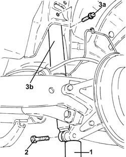
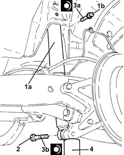

4420A30 REAR SUSPENSION SHOCK ABSORBER (ONE), LEFT OR RIGHT - R.R. - CHECK WHEEL GEOMETRY SEPARATELY
- Path
- Procedures > 44 SUSPENSION AND WHEELS > 4420 REAR SUSPENSION > 4420A REAR DAMPERS AND SPRINGS > 4420A30 REAR SUSPENSION SHOCK ABSORBER (ONE), LEFT OR RIGHT - R.R. - CHECK WHEEL GEOMETRY SEPARATELY
- Kind
- repair procedure (removal / refitting; the operation number is the code)
- Applies to
- all engines; all production periods
- Interactive page
- https://sloeber94.github.io/elrnDB-fCrm/en/#/194000551
Applies to: all engines; all production periods
 Removing
Removing
 Refitting
Refitting- Position the vehicle on a lift.
Op. 4450B06 LEFT REAR WHEEL - R.R
Op. 7055B44 LEFT REAR WHEEL ARCH LINER - R.R
1. Position a hydraulic jack underneath the rear wheel stub axle and raise it slightly.
2. Undo the bolt fixing the shock absorber to the rear wheel stub axle.
3. Undo the bolt (3a) and remove the rear suspension shock absorber (3b).

Applies to: all engines; all production periods
Refitting
Removing1. Place the rear suspension shock absorber (1a) in its housing and secure it without tightening the bolt (1b).
2. Connect the shock absorber to the rear wheel stub axle and secure it without tightening the bolt.
3. Tighten the bolts (3a) and (3b) fixing the rear suspension shock absorber to the recommended torque.
Component | Fastening | dia | Value (daNm) | Validity |
|---|---|---|---|---|
Rear shock absorber | Bolt | M12 | (bodyshell side) 7.5 - 10.5 |
Component | Fastening | dia | Value (daNm) | Validity |
|---|---|---|---|---|
Rear shock absorber | Bolt | M14 | (steering knuckle side) 14.0 - 18.0 |
4. Remove the hydraulic jack.

Applies to: all engines; all production periods
Op. 7055B44 LEFT REAR WHEEL ARCH LINER - R.R
Op. 4450B06 LEFT REAR WHEEL - R.R
- Remove the vehicle from the lift.